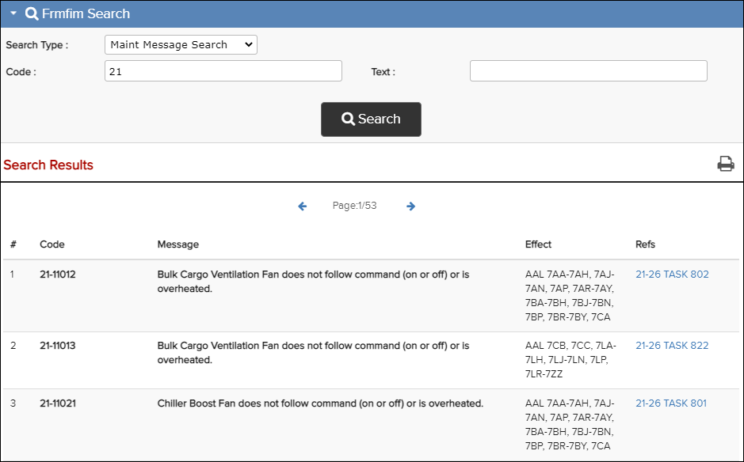

Maintenance Messages Search is a category in FRMFIM Search. For more details, refer to FRMFIM Search Pane.
To search Maintenance Messages, do these steps:
-
Click on the Search button, or the keyboard Enter button,
to start the search.
Your search results appear in the Search Results section. Click on the link in the Refs column to see the task for a the message in the Content pane.From the Search Results area, click the

Maint Message Search Result
 Print Search Results icon to print the search results in
PDF format.
Print Search Results icon to print the search results in
PDF format.